How do I import Props in the Animaze Editor?
The Animaze Editor is an authoring tool that enables artists, hobbyists, and professionals to freely import their 3D, Live2D, hybrid and .VRM avatars to the Animaze apps. You can download the Animaze Editor freely on Steam. You can also find the Animaze Desktop app on Steam and the Animaze iPhone app on the App Store.
Throughout this guide, we will use the sources of a crown prop that you can download here. If you are new to 3D modeling, we recommend that you start with props and then progress to avatars, as shown in this guide. If you are new to modeling and avatars in general, the best place to start depends on your goals. If you are also taking into account other avatars, check out our Live2D avatar documentation.
However, if you ultimately want to create 3D models, it's important to note that the process for 2D models and 3D models can be quite different. If you choose to work with 3D models, we recommend that you start with props and then progress to avatars.
Note that the following files folder structure is mandatory for the import process:
1. .fbx geometry name the same as the folder name
2. Textures (.tga, .png, .jpg files) go in Textures/ folder
3. Skeletal Animations (exported as solo .fbx files) go in the Animations/ folder
To ease asset management and make it clear what each asset's role is (i.e. avatar, prop, or background), we are using a simple naming convention system that prefixes the asset type to the name of the assets. Here are three examples:
* avatarName - for avatars
* propName - for props
* backgroundName - for backgrounds
Follow these steps to begin importing your model:
1. Download the PropCrownTest archive using this link and extract the files inside.
2. Open the Animaze Editor, navigate to Assets and select Import 3D Object.
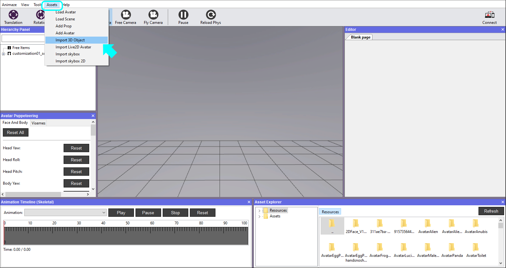
3. Select the model's geometry file, the .fbx file.
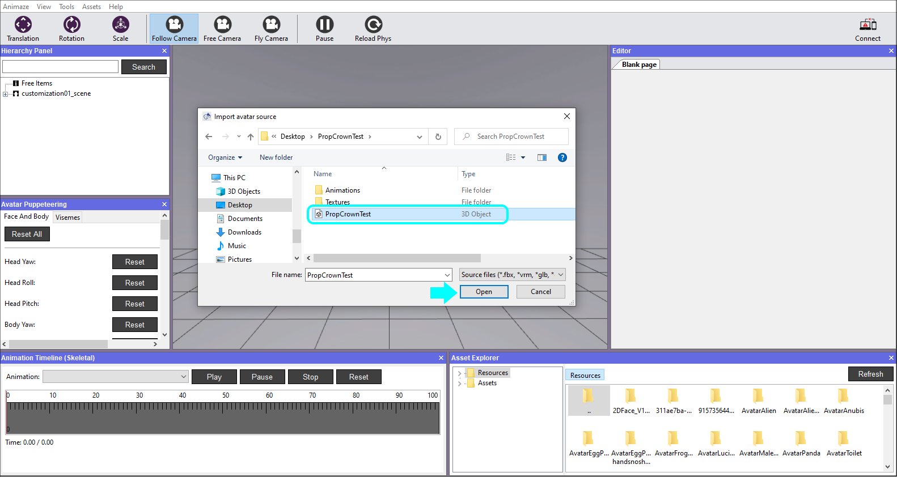
4. The following window prompts you to select the files you want to import. If this is your first time importing a specific model, make sure all the files are ticked and select the item type from the dropdown list before clicking Import.
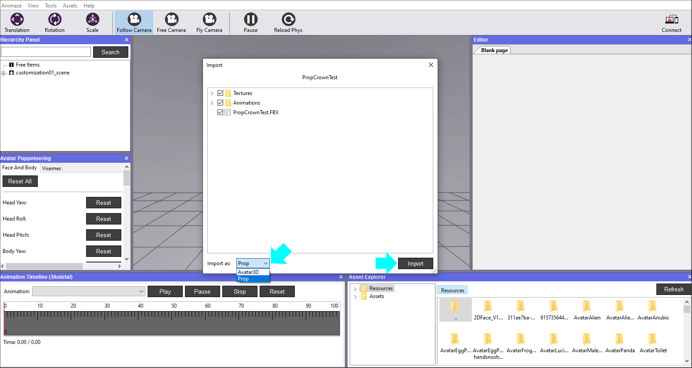
5. A report of Import Issues will be displayed after the Animaze Editor checks the files. The warning system checks for skeletal animations. As such, the warnings only apply if you are using them. The crown example doesn’t use animations yet, so we can ignore all the warnings. Click X to dismiss the window.
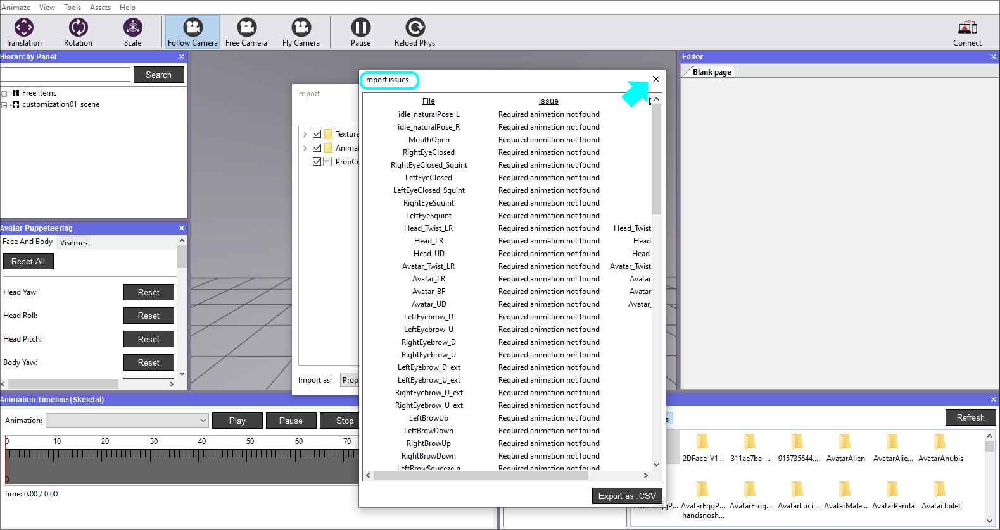
6. Next, there's a verbose log that gets prompted for every import, hit the Ok button to dismiss. As you work on more complicated models, these logs will surface errors and help you with debugging.
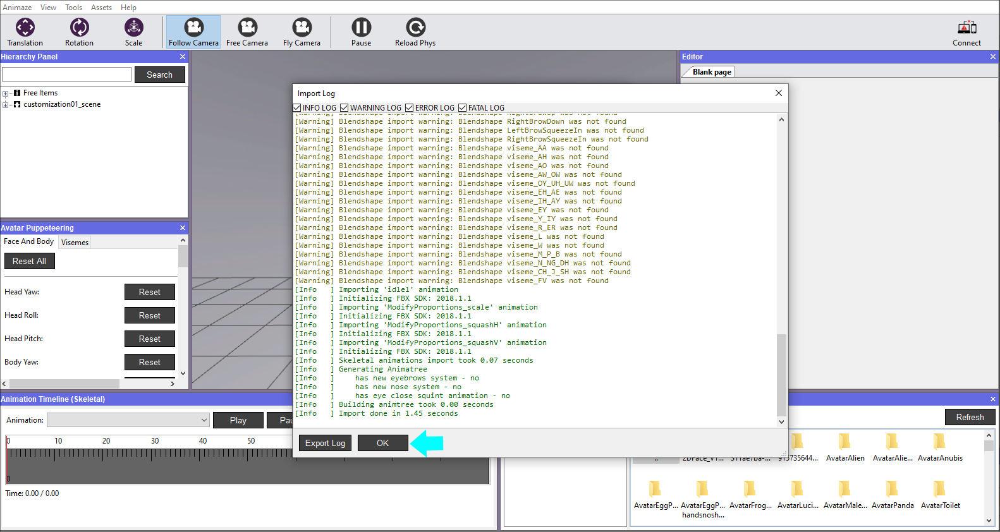
7. Once the prop is imported, it will be displayed in the viewport. Expand the Free Items in the Hierarchy Panel, right-click on the item and select Reset camera to have it centered in the Viewport.
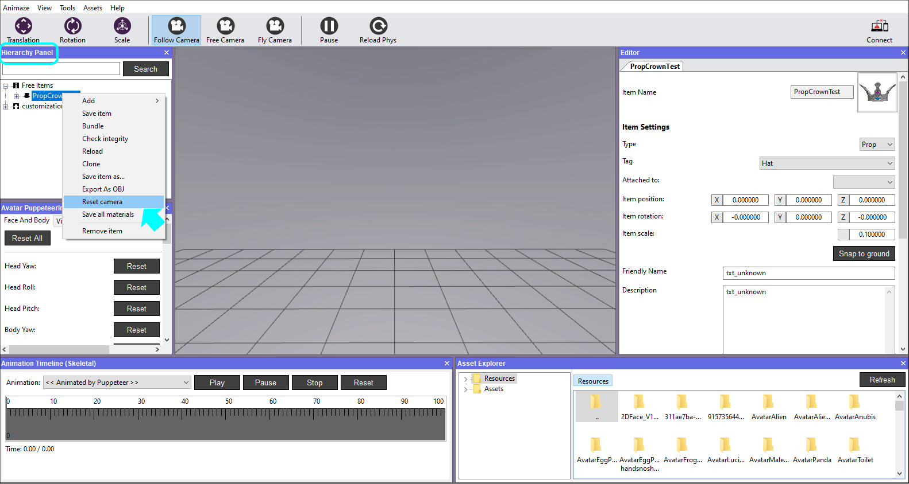
8. In the Editor Panel, select the correct Tag from the pull-down menu. The tag tells the system where to attach the prop, so it’s important you select the correct tag.

9. The imported geometry sometimes comes in way too large or way too small from the 3D editing software, so we need to scale it to an appropriate value. A grid unit is equal to a unit in the metric system, so you can use the grid to estimate how big/small you want the item to be.
In the Editor Panel, you change the size of the item by adjusting the value of Item scale. A grid unit is equal to a unit in the metric system, so you can use the grid to decide how big/small you want the item to be. It’s current size is 0.100000. We can leave it like this.
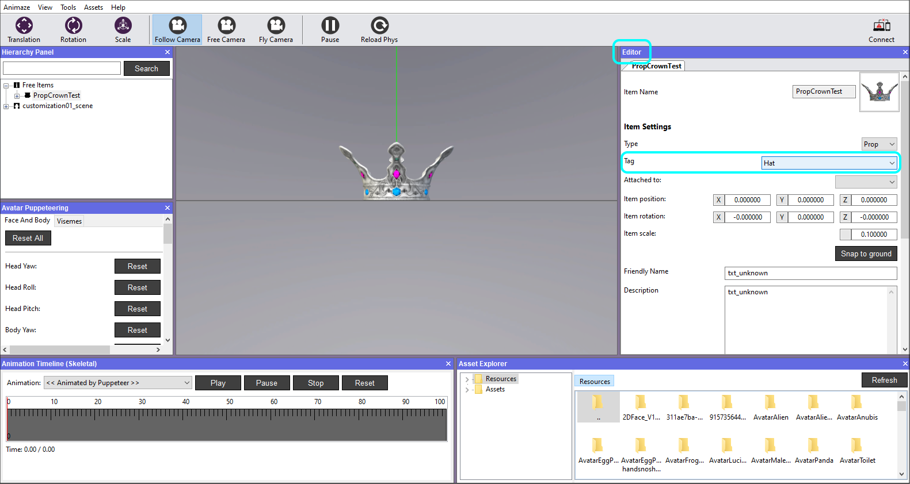
10. If you want your hat to be able to fit on most avatars, then the prop needs scaling animations. Go to the Editor Panel and select Customization Options.
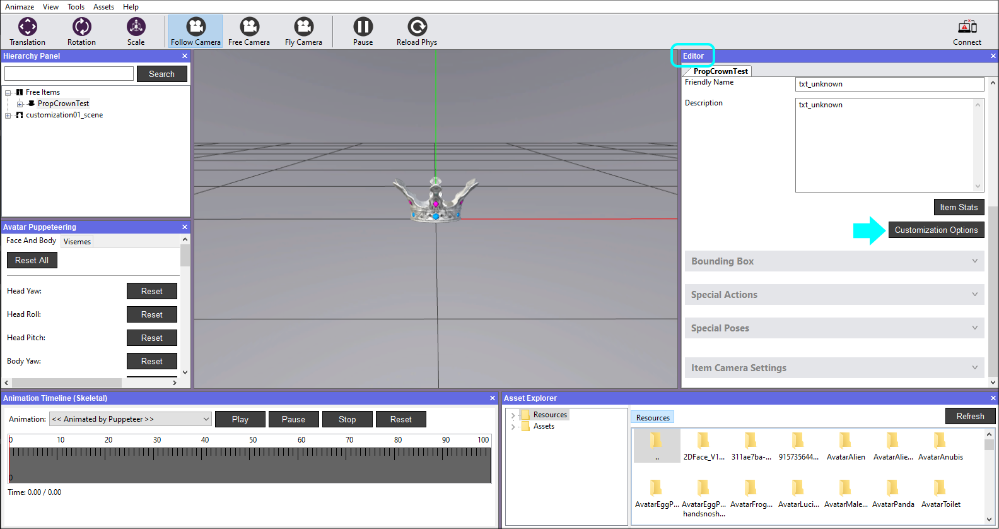
11. Go to the Animation tab and click on Add button.
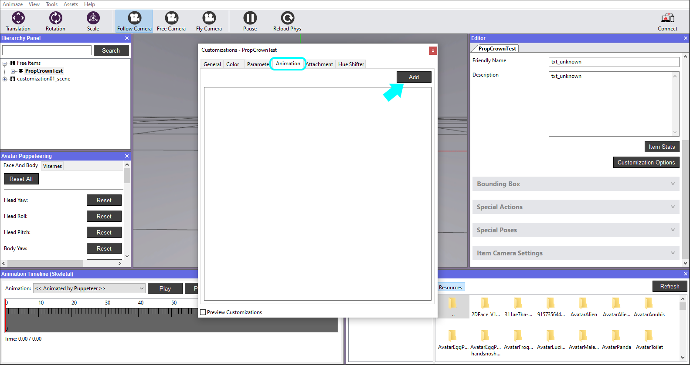
12. Expand the added tab, click on Browse and load the scaling animation.
Note, the location and name of the source folder will vary depending on where you saved and what you named the folder. The default name of the folder is “PropCrownTest”.
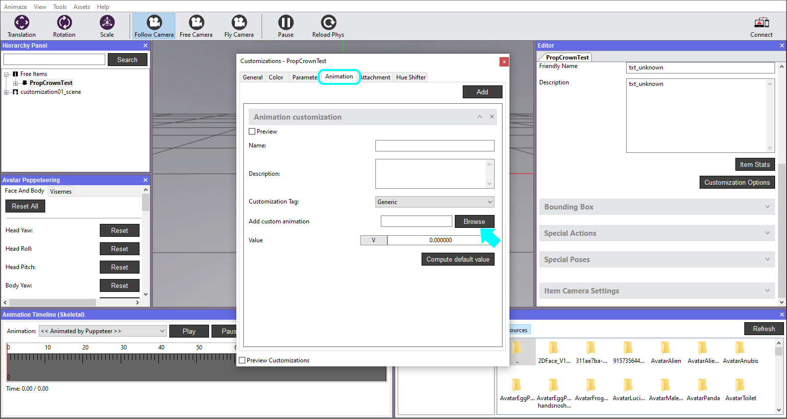
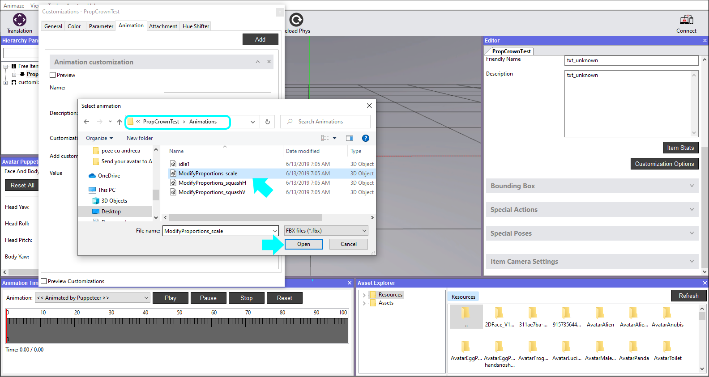
13. Click the Compute default value button to calculate the middle range of the scaling animation. The particular scaling animation used here features the default pose around the middle of the animation timeline, but to get a very precise value, the Compute default value button evaluates the animation in 1000 samples and checks each sampled pose to the default pose, trying to find the exact match.
Once found, it automatically fills the Value text box with the percentage of the animation where it matches the default pose. Close the window afterwards.
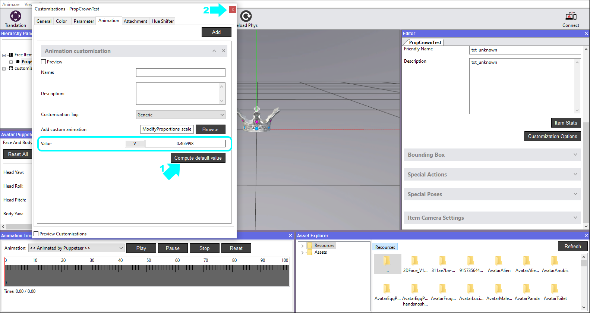
14. Now let’s see how the added scaling animation works. In order to debug it, go to Tools and select Customization Debugger.
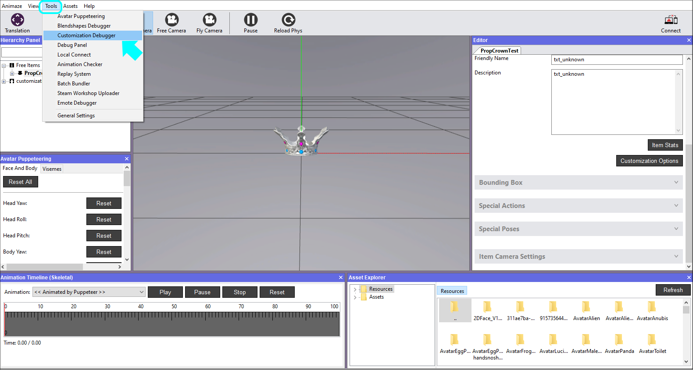
15. Simply click and drag the slider left & right to see how the animation works. Click the Revert button to set the correct value again and close the window.
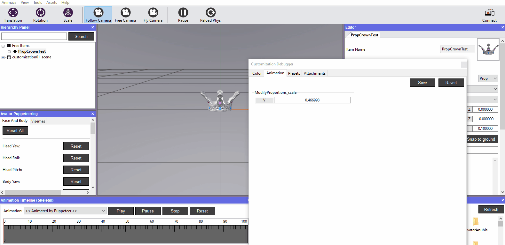
16. Save item in Hierarchy Panel when you are done. If you exit the Animaze Editor without saving, all of your work will be lost.
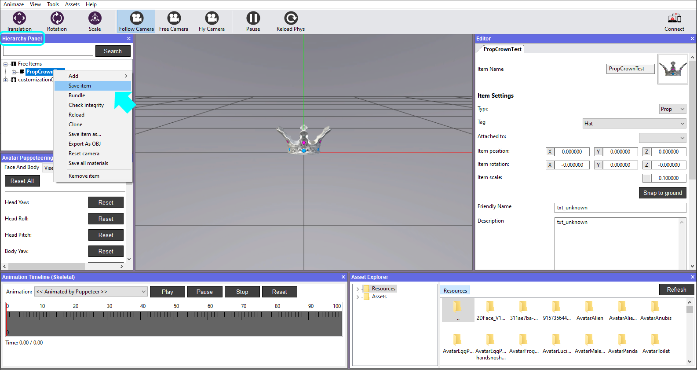
That’s it. You have successfully imported a prop :)